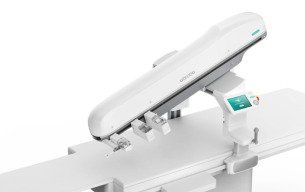

Commercial and clinical-stage systems · panvisa_abrobo2024
PANVIS-A

1 / 7


- Family
- Commercial and clinical-stage systems (commercial)
- Devices
- one 0.035-in guidewire + one 5F angiographic / 6F guiding catheter
- Degrees of freedom
- 2 per device
- Push
- Clamp relay
- Twist
- Rolling between rollers
- Tested up to
- Human
- Sim-to-real
- None found — No simulation-trained controller found for this robot.
Testing
- Highest level
- Human
- What was tested
- RCT 64 robot vs 66 manual, 4 centres, NCT05778214 (zhang2026_safety)
- Key numbers
- success 100% both arms; operator dose 1.67+-3.49 vs 43.63+-38.95 uSv (zhang2026_safety abstract)
Mechanism
- Push (translation)
- clamp-relay
- Twist (rotation)
- clamps twist guidewire (thumb-index mimic)
- Device range
- N.R.
- Target anatomy
- neurovascular (cerebral angiography)
Sensing and interface
- Force sensing
- N.R.
- Leader and haptics
- no (master-slave manipulator)
- Imaging
- slave on DSA table
- Sterility
- N.R.
Size
- Footprint (mm)
- N.R.
- Mass (kg)
- N.R.
Simulation
- Simulation model
- none found
- Sim-trained controller
- none found
Versions
- Lineage
- third generation per press reports
Sources
- Safety and efficacy of cerebral robot assisted angiography: randomized comparison of robotic versus manual procedures · Journal of NeuroInterventional Surgery, 2026 · doi:10.1136/jnis-2025-023412 [zhang2026_safety]
- A Reciprocating Delivery Device-Based Endovascular Intervention Robot With Multimanipulators Collaboration · IEEE Transactions on Instrumentation and Measurement, 2024 · doi:10.1109/tim.2023.3342853 [cao2024_reciprocating]
Notes
- Notes
- NMPA Class III 2024-08-26 (company release; yicai says Aibo Hechuang was the only interventional robot to get a certificate in 2024, indication angiography only, not treatment).
This record
- Read level
- full — full text on disk
- Picture
- zhang2026_safety Fig. 1(A), PMC image https://cdn.ncbi.nlm.nih.gov/pmc/blobs/cc91/13217118/7172c200f078/jnis-18-5-g001.jpg (article page https://pmc.ncbi.nlm.nih.gov/articles/PMC13217118/) ↗ — licence: CC BY-NC 4.0; grade C
- Picture changes
- cropped (0,0)-(305,192) of 684x390 (panel A, above the panel letter); not upscaled; no tone change; no erasing
- Found by
- commercial: Search of commercial and clinical-stage systems.
- Data
- JSON · YAML:
records/robots/panvisa_abrobo2024.yaml - Correction
- Suggest a correction [repository not created yet]